Токио · Тоёсу · еда
Завтрак на рынке Тоёсу: четыре заведения, куда ходят сами работники рынка
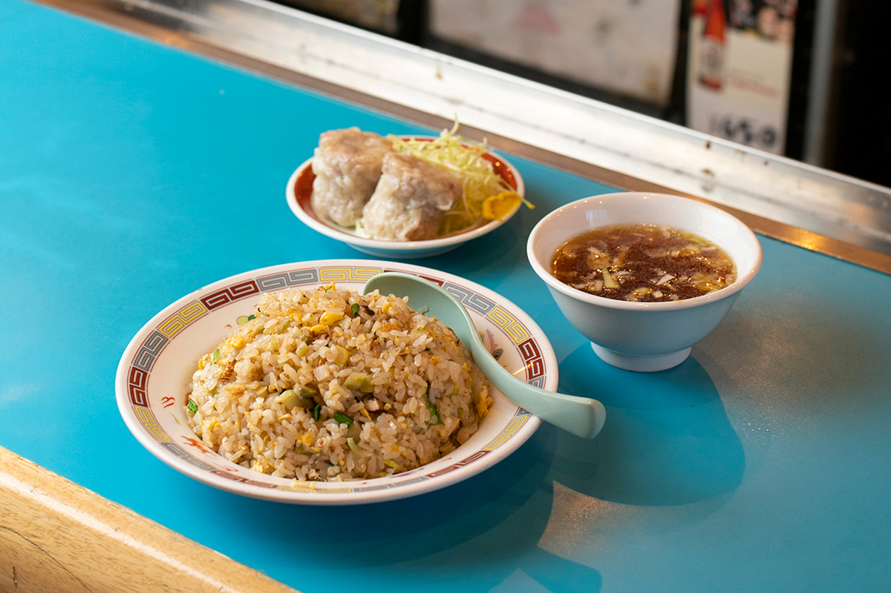
Для тех, кто работает на рынке Тоёсу, здешние закусочные почти домашняя кухня. В заведениях, куда ходят профессионалы с требовательным вкусом, годами не меняются ни вкус, ни вывеска.
Рынок
Где завтракают знатоки
Закусочные рынка Тоёсу открываются рано, некоторые уже в пять утра, и закрываются к середине дня. Четыре заведения из этой статьи находятся на третьем этаже двух корпусов: административного в блоке 7 и корпуса оптовой торговли рыбой в блоке 6. Свои любимые места здесь показали знатоки еды, среди них Ханако Усуи, повар японской кухни, которая изучает старую кухню Эдо, и Коити Огава, знаток рыбы из семьи оптовых торговцев Цукидзи. В 2022 году она водила гостей и по внешнему рынку Цукидзи.
Выходные у заведений совпадают с днями, когда закрыт рынок, но у каждого бывают и свои, поэтому перед поездкой их лучше проверить.
Пицца
«Томина»: итальянская кухня рынка
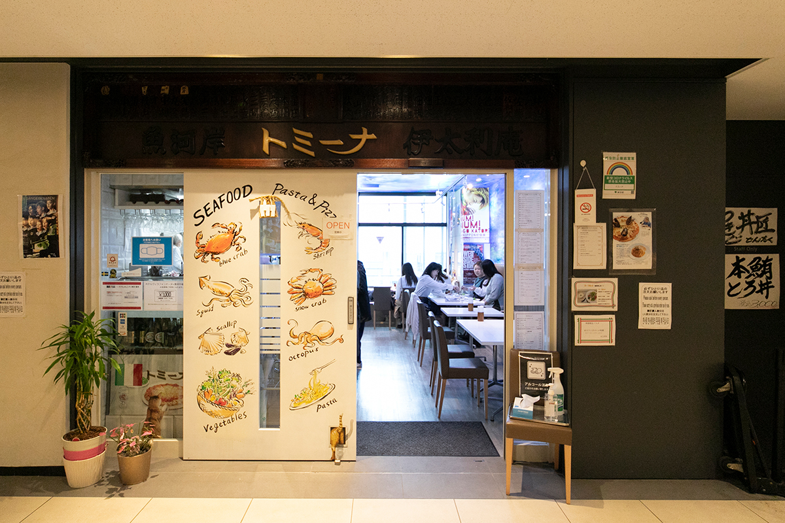
«Томина» это единственный итальянский ресторан на рынке Тоёсу. Перед тем как открыть его ещё в Цукидзи, хозяйка вместе с мужем уехала учиться в Пьемонт. Итальянская кухня, которую она там увидела, держится на ароматах и сезонных продуктах, и такой же получилась классическая итальянская карта ресторана.
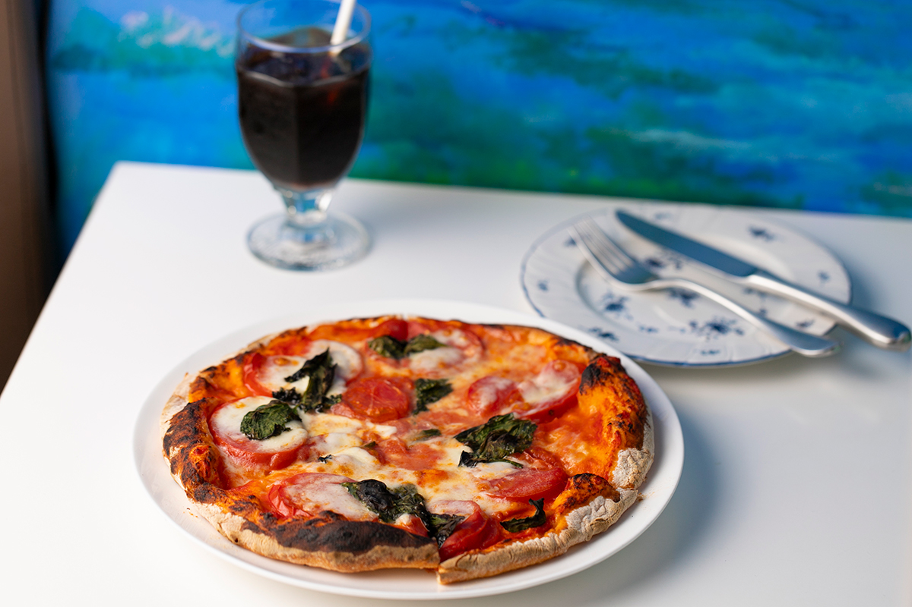
Знатока еды восхищает, что в маленьком зале стоит настоящая печь для пиццы. Пиццу подают, пока она не закончится.
«Нарядная итальянская кухня на случай, когда хочется показать свежие овощи и рыбу Тоёсу»
знаток еды
«Томина»
- Адрес
- Токио, Кото, Тоёсу, рынок Тоёсу, блок 7, административный корпус, 3-й этаж
- Телефон
- +81 3-6633-0039
- Часы работы
- 9:00–14:30 (последний заказ в 14:00)
Кафе
SENRIKEN: кофе с молоком с 1914 года
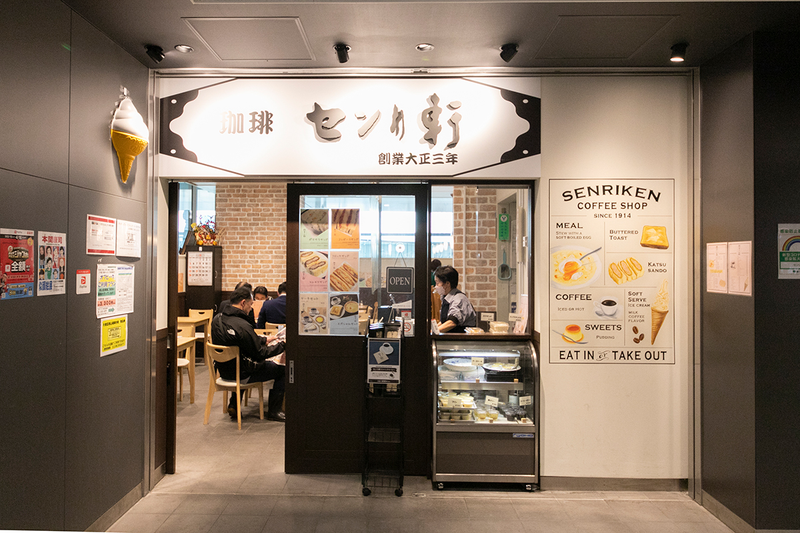
Кафе открылось в 1914 году как молочный бар «Сэнрикэн». Меню с тех пор меняется вслед за вкусами работников рынка. Уже после переезда в Тоёсу здесь придумали мягкое мороженое со вкусом кофе с молоком, 460 иен в 2023 году, и его любят иностранные туристы.
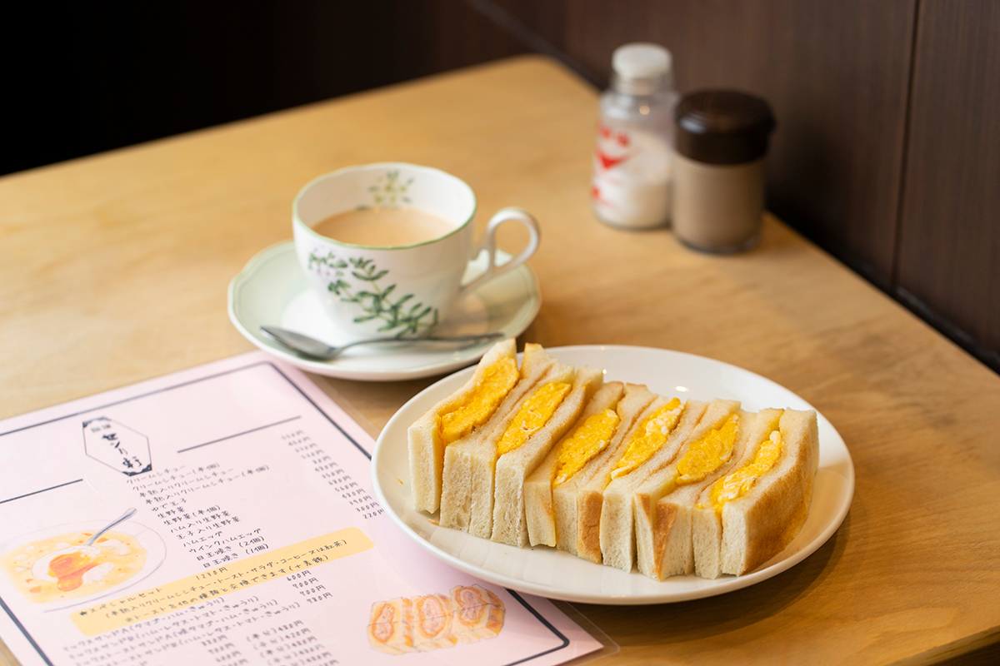
Горячий бутерброд с омлетом появился по заказу одного из постоянных гостей. Ханако Усуи берёт половину порции: перед работой на кухне она не хочет наедаться.
«Хрустящий поджаренный хлеб, толщина омлета, всё именно так, как я люблю»
Ханако Усуи
Кофе с молоком, который здесь коротко зовут «мирко», слегка сладкий, и вкус у него тот же, что в год открытия. Знаток рыбы, когда хочет позавтракать легко, обычно заказывает его с тостом.
«Встречи в Тоёсу я всегда назначаю в SENRIKEN»
Коити Огава
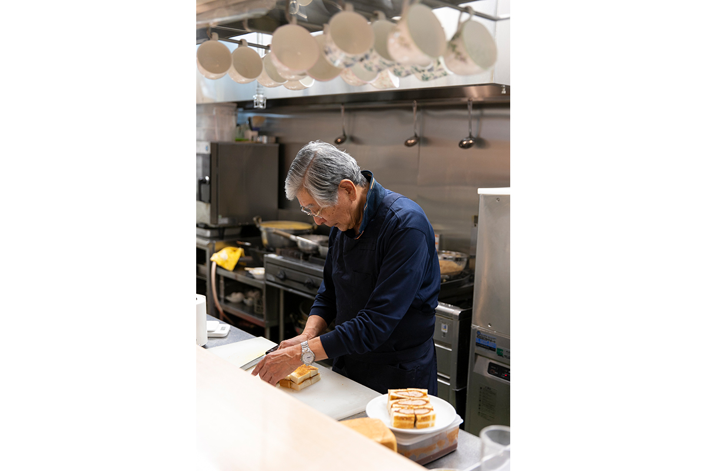
SENRIKEN
- Адрес
- Токио, Кото, Тоёсу, рынок Тоёсу, блок 6, корпус оптовой торговли рыбой, 3-й этаж
- Телефон
- +81 3-6633-0050
- Часы работы
- 5:00–13:00
Китайская кухня
«Ядзиман»: сюмай, пока ждёшь заказ
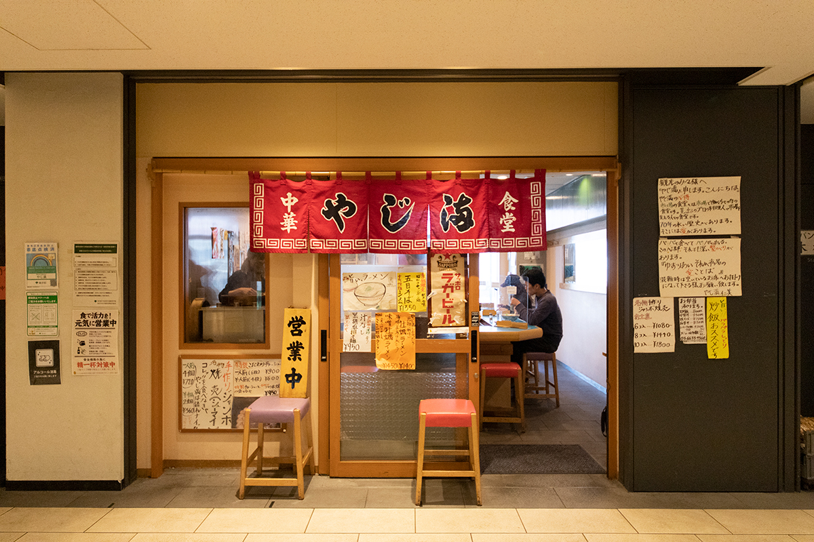
Старая китайская закусочная годами кормит работников рынка, которым нужно быстро и вкусно. Пока готовится заказ, люди рынка берут сюмай, и это блюдо можно считать символом рыночной еды. Закусочную держат торговцы для торговцев, и многое в меню появилось по просьбам гостей с требовательным вкусом. Жареный рис с пикулями дзасай стоил 850 иен в 2023 году.
«Приезжаю в Тоёсу и сам не замечаю, как оказываюсь в "Ядзиман"»
знаток еды
«Сюмай в японском духе вкусные и без соуса, отличная добавка к основному блюду»
Ханако Усуи
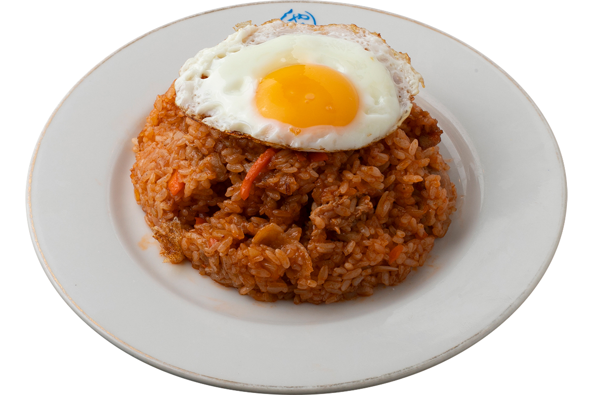
Закусочную держит хозяйка вместе со старшей хозяйкой, и в зале по-домашнему уютно. Бирюзовые столы для нового зала долго выбирали, когда закусочная переезжала в Тоёсу.
«Ядзиман»
- Адрес
- Токио, Кото, Тоёсу, рынок Тоёсу, блок 7, административный корпус, 3-й этаж
- Телефон
- +81 3-6633-4560
- Часы работы
- 5:00–13:00
Суши
SUSHIBUN: суши Эдомаэ с рынка Нихонбаси
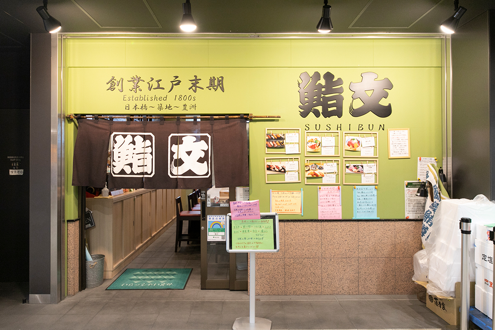
Здесь подают редкие суши Эдомаэ в старом смысле слова: около 80% работы уходит на подготовку рыбы, и на рис ложится уже обработанная начинка. Прежде всего это тушёные начинки, морской угорь анаго и морское ушко. Дикую рыбу выбирают по опыту нескольких поколений, а нори берут хрустящий, из моря Ариакэ.
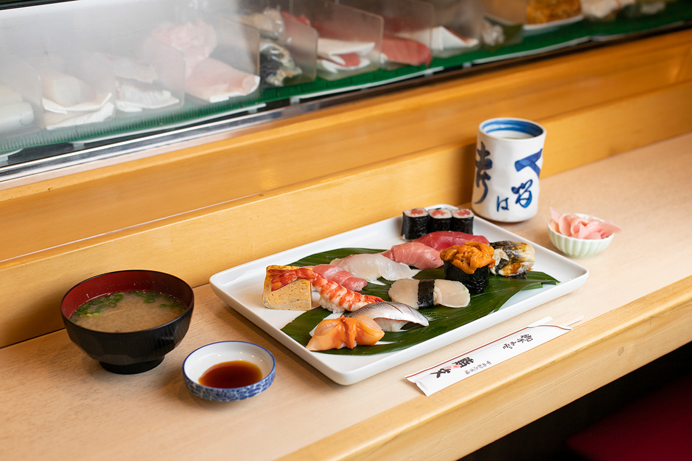
Знаток рыбы с детства видел, как тщательно здесь готовят рыбу, и в этом заведении уверен полностью.
«Если в Тоёсу есть суши, то точно здесь»
Коити Огава
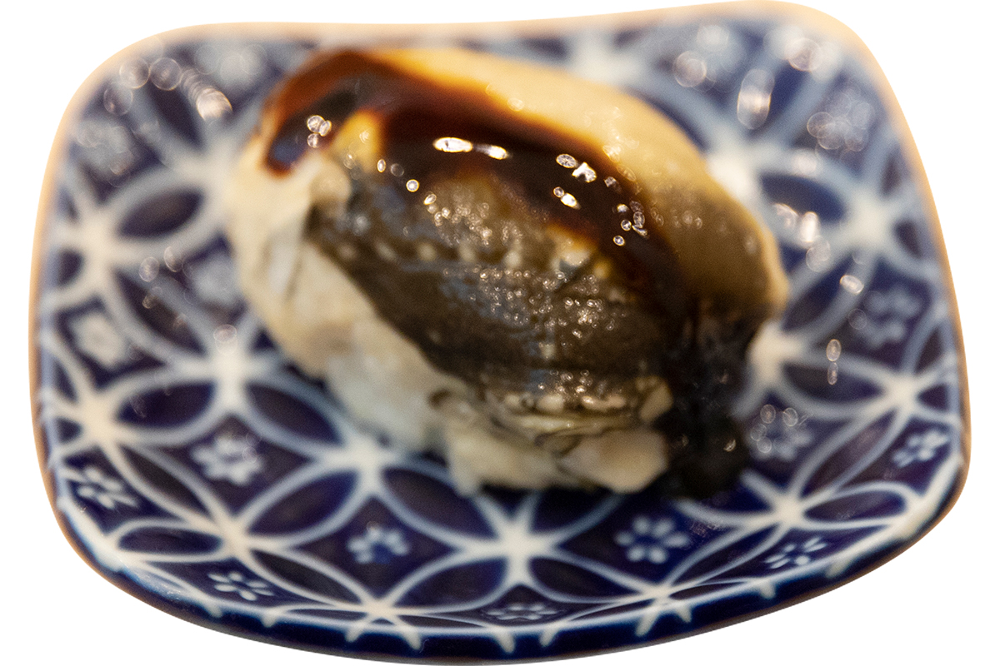
«Суши с толстым тушёным анаго, попробовав раз, уже не забудешь»
Коити Огава
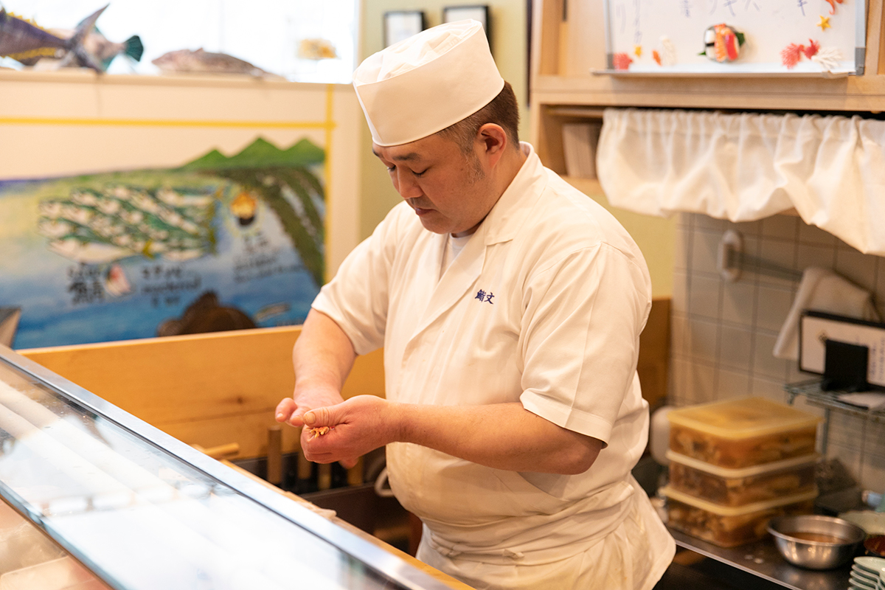
На стене стоит посмотреть рисунок рыб, точный до мелочей. Его нарисовал постоянный гость Сакана-кун, знаменитый в Японии знаток рыб.
SUSHIBUN
- Адрес
- Токио, Кото, Тоёсу, рынок Тоёсу, блок 6, корпус оптовой торговли рыбой, 3-й этаж
- Телефон
- +81 3-6633-0300 (лучше заранее забронировать по телефону)
- Часы работы
- 6:30–14:00 (последний заказ)
Фото: Ямато Нонака.